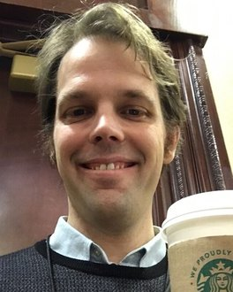
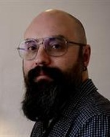
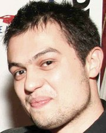

Simulated vs. Unsimulated World Models
A session at the ELLIS UnConference 2026 in Paris
Tuesday 8 December 2026, 14:00–16:00
Palais des Congrès de Paris, 2 Place de la Porte Maillot, 75017 Paris (room to be announced)
Three invited talks and a panel discussion
About the session
World models have become a cornerstone of AI because they generalize beyond experience and simulate physical events, giving agents internal predictions to plan and reason with. Brains predict too, propagating information forward through space and time and continually updating through prediction errors that flow backwards. Yet the two kinds of world model are defined, tested and extended very differently.
This session contrasts explicit generative simulation in AI, the in-silico, simulated world, with the brain’s implicit predictive representations, the in-vivo, unsimulated world. We bring together researchers from machine learning, cognitive science and neuroscience to derive testable hypotheses about how world models work, and to develop computational approaches for generating and evaluating them, with an eye on new inductive biases for machine learning.
The session builds on our review “Brain’s world model is smarter than we think”, Current Opinion in Behavioral Sciences (2026).
Key questions
- Simulated vs. unsimulated worlds: comparing explicit simulators with implicit predictive representations at the level of representational geometry, algorithm, and prediction and behavior. Where do JEPAs and multimodal foundation models fall short of the brain?
- Metacognitive simulation: planning involves not only simulating futures but judging whether the current model still holds. A metacognitive agent can learn which predictive model to use, trust and revise.
- Prediction without explicit models: model-free agents navigate without representing environmental structure, value functions project the world onto goal space, and large language models infer latent structure they were never shown.
- Memory and stochasticity: grid, place, border and corner cells support topology-aware prediction that may transfer across environments, while distributional dopamine codes capture real-world uncertainty.
- Brain foundation models: large models pretrained on brain imaging, such as Brain-JEPA, predict masked brain activity in latent space instead of reconstructing the signal. Can they reveal the brain’s own world model?
Programme
Tuesday 8 December 2026, Paris time. Select a session to read its abstract.
Times are tentative.
Predictive world models
Benjamin Grewe, ETH Zürich, Switzerland
Title to be announced
Abstract to be announced.
Metacognitive world models
Benedetto De Martino, University College London, UK
Title to be announced
Abstract to be announced.
Brain foundation models
Juan Helen Zhou, National University of Singapore
Title to be announced
Abstract to be announced.
Unsimulated world models
An open discussion on what current world models are missing, joined by the three invited speakers.
- Demian Battaglia, CNRS and University of Strasbourg. Structure and dynamics
- Jeehyun Kwag, Seoul National University. Spatial navigation and memory
- Mattia Rigotti, IBM Research Zurich. Reasoning and LLMs
Speakers and panelists
Invited speakers
- BG

Benjamin Grewe
ETH Zürich, Switzerland
Predictive world modelsTalk at 14:00
- BD

Benedetto De Martino
University College London, UK
Metacognitive world modelsTalk at 14:30
- JZ
Juan Helen Zhou
National University of Singapore
Brain foundation modelsTalk at 15:00
Panelists
Panel at 15:30, joined by the three invited speakers.
- DB
Demian Battaglia
CNRS and University of Strasbourg
Structure and dynamics
- JK
Jeehyun Kwag
Seoul National University
Spatial navigation and memory
- MR

Mattia Rigotti
IBM Research Zurich
Reasoning and LLMs
Organizers
- SL
Sang Wan Lee
KAIST, Korea
Workshop chair
- MR
Mattia Rigotti
IBM Research Zurich, Switzerland
Speakers and panel
- SL
Seong-Whan Lee
Korea University, Korea
Financial support for the invited speakers
- JZ
Juan Helen Zhou
National University of Singapore
- JK
Jeehyun Kwag
Seoul National University, Korea
- DB
Demian Battaglia
CNRS and University of Strasbourg, France
Coordinated by Niklas Koeppe, Jiewon Kang and Myounghoon Ha (KAIST).
This event is supported by Institute of Information & communications Technology Planning & Evaluation(IITP) grant funded by the Korea government(MSIT) (No. RS-2026-25522672, Development of Unified Reasoning Technology Mimicking Human Cognition for Hierarchical Understanding and Unbounded Problem Solving).